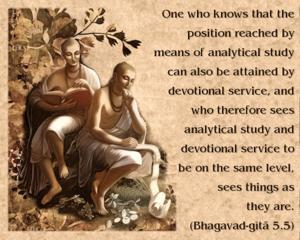
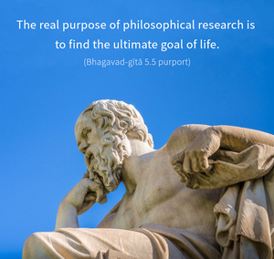
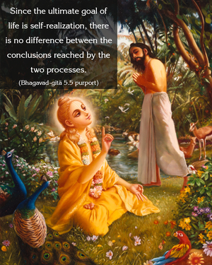

One who knows that the position reached by means of analytical study can also be attained by devotional service, and who therefore sees analytical study and devotional service to be on the same level, sees things as they are.



The real purpose of philosophical research is to find the ultimate goal of life. Since the ultimate goal of life is self-realization, there is no difference between the conclusions reached by the two processes. By Sāṅkhya philosophical research one comes to the conclusion that a living entity is not a part and parcel of the material world but of the supreme spirit whole. Consequently, the spirit soul has nothing to do with the material world; his actions must be in some relation with the Supreme. When he acts in Kṛṣṇa consciousness, he is actually in his constitutional position. In the first process, Sāṅkhya, one has to become detached from matter, and in the devotional yoga process one has to attach himself to the work of Kṛṣṇa consciousness. Factually, both processes are the same, although superficially one process appears to involve detachment and the other process appears to involve attachment. Detachment from matter and attachment to Kṛṣṇa are one and the same. One who can see this sees things as they are.